Saving Wildlife
My goal is to develop unique custom made veterinary medical devices aimed at improving the surgical outcomes and health for wildlife and other animals that larger companies do not find "cost effective" to assist with. Most of my projects are targeted to specific animals or small groups of animals.
The design, engineering and development is mainly self funded. And so, often I am limited in my capacity to help since the process is time consuming and often expensive. But I wish I could do more.
YOU can help too. With extra financial assistance, I could provide my veterinarians with many more beneficial, unique devices they need to make the lives of their animals better.
Case Studies
Pioneering Veterinary Engineering
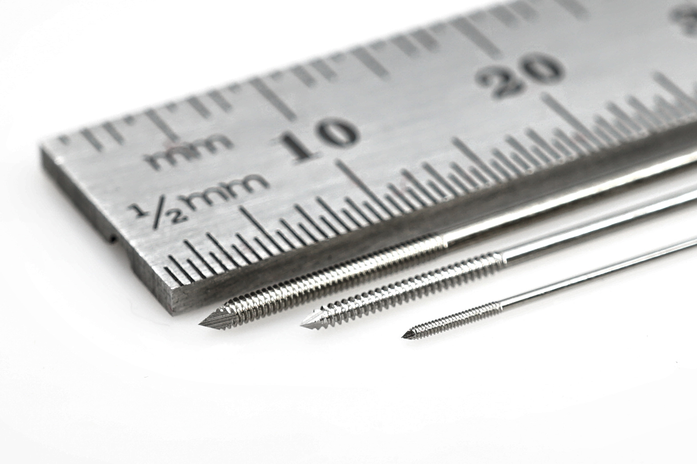
Micro Skeletal Fixation Pins
Engineered for broken bones of the smallest birds and animals. Features unique antibacterial and strength properties.
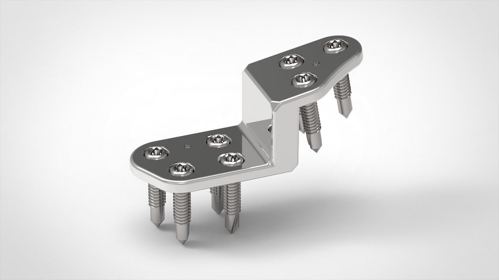
Custom Made Pelvic Implant
TPO pelvic implant designed to expand the pelvic cavity of a Sun Bear to reduce daily pain.
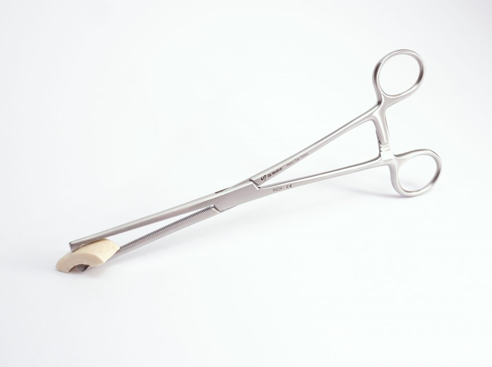
Fragment Grasping Kocher Forceps
Re-engineered forceps for manipulating small fragments and implants without deforming the tool.
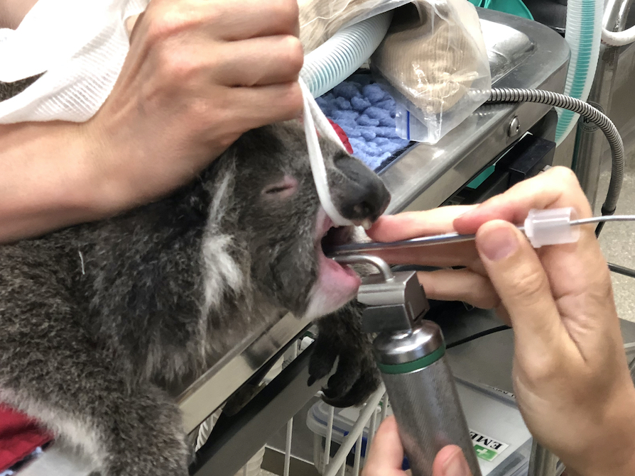
Micro Laryngoscope Blades
(In Development) Developed for small bird and animal endotracheal tubing and oral examination.
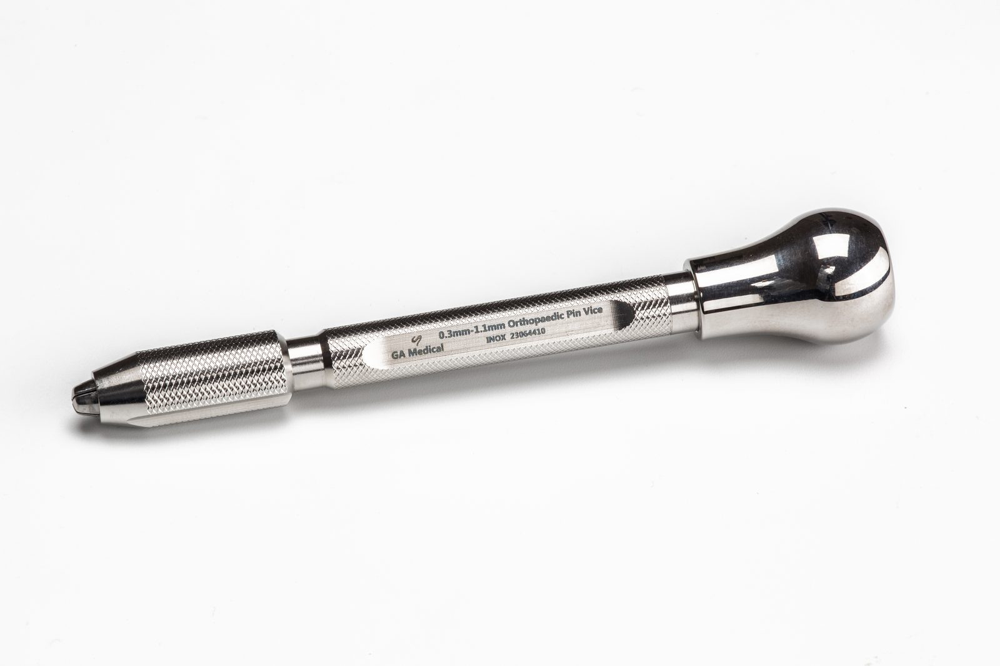
Micro Orthopaedic Pin Chuck
Designed to increase control and accuracy for the insertion of micro pins and wires.
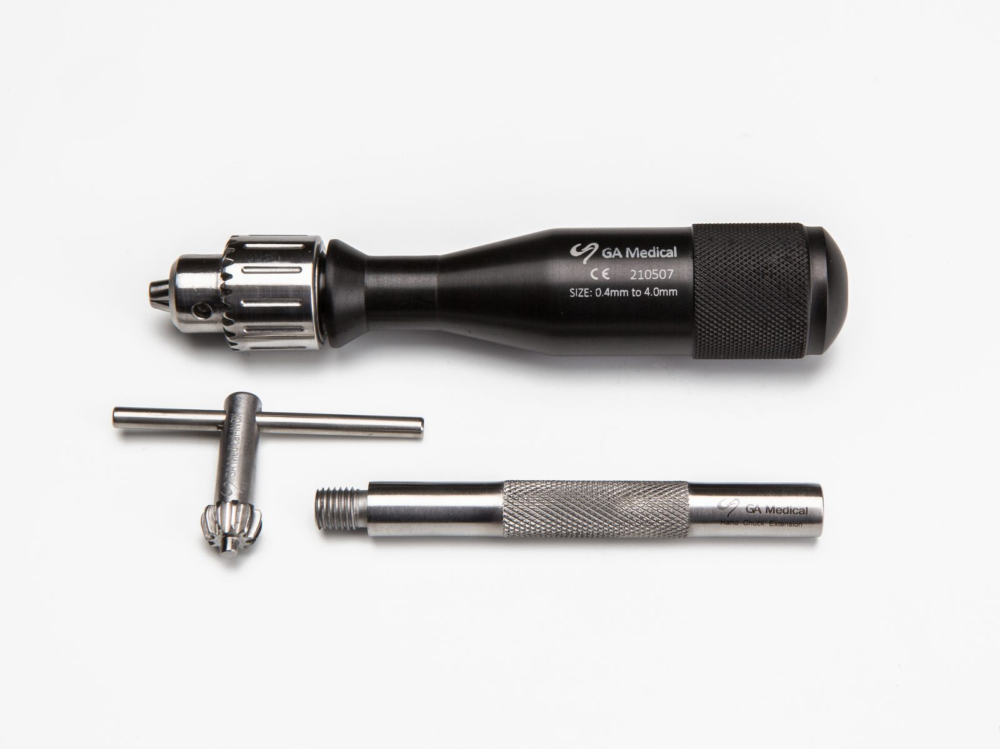
Mini Orthopaedic Hand Chuck
Designed to increase control and accuracy for the insertion of micro pins and wires.
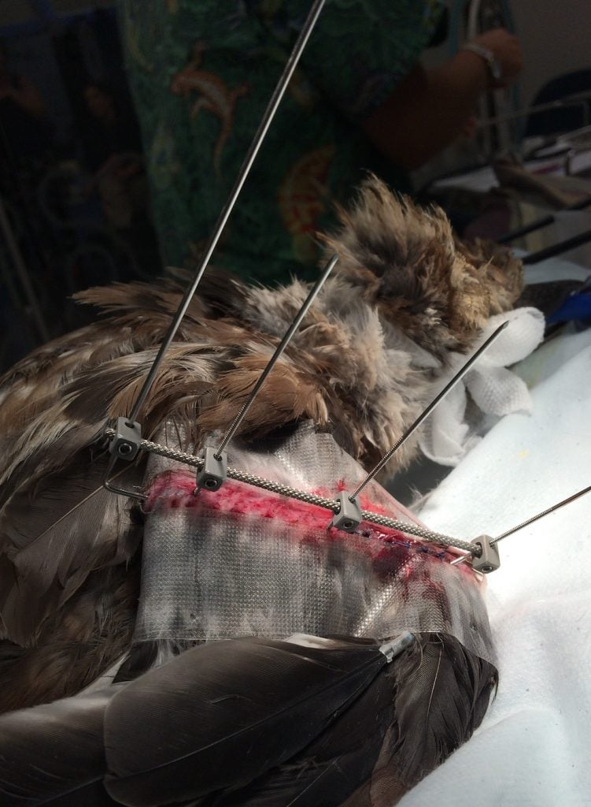
Table Mounted Veterinary Gag
Unique gag with cheek dilators for oral procedures on tight-gaped Australian mammals.
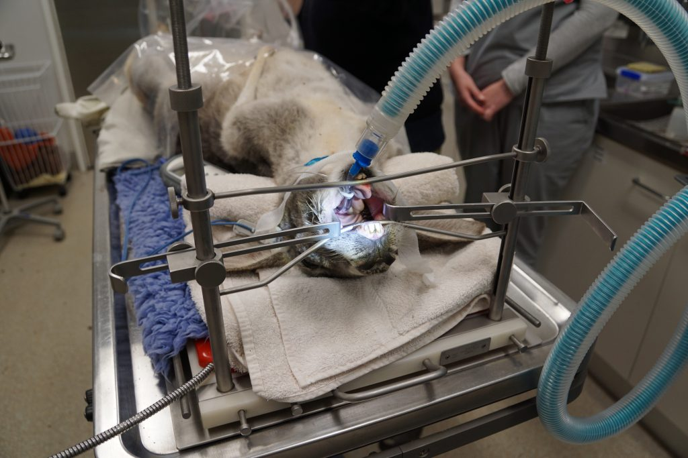
Micro External Skeletal Fixation Joints
Extra small, lightweight joints for bird wing fractures to reduce strain and improve healing.
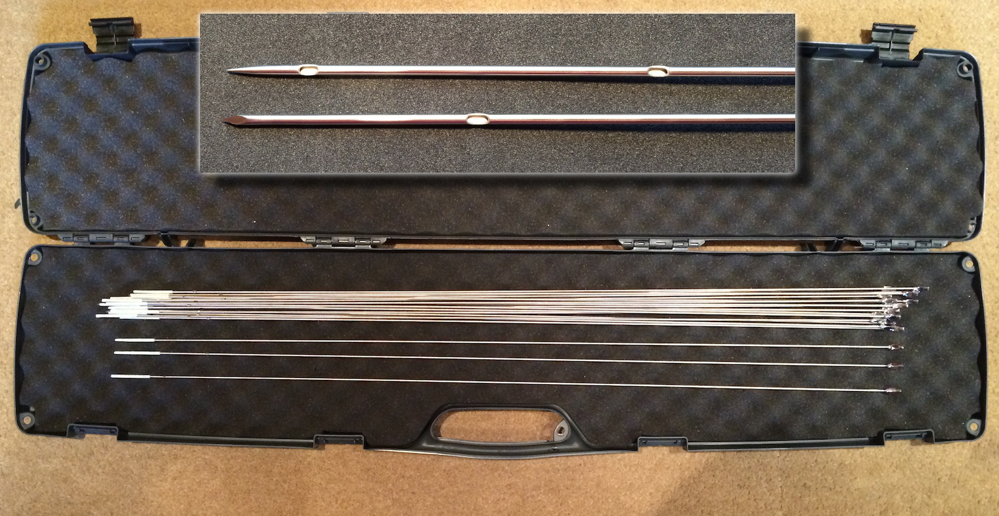
Extra Long Hypodermic Needles
Designed for the humane euthanasia of beached whales that cannot be returned to sea.
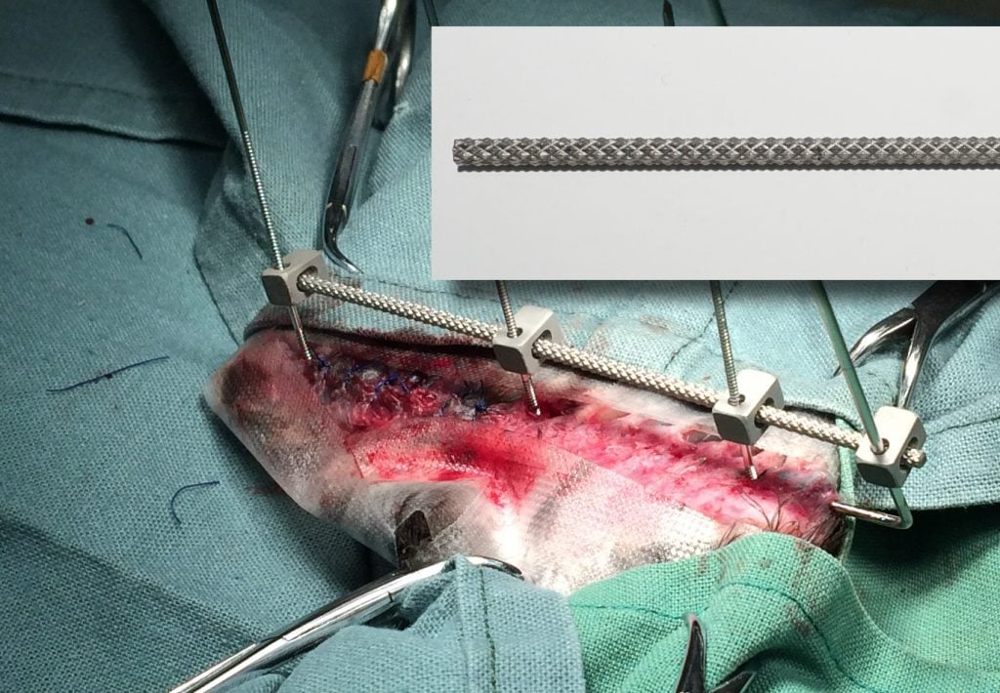
High Friction ESF Connecting Rods
Developed to minimize bone malunion by reducing fixation device slippage.
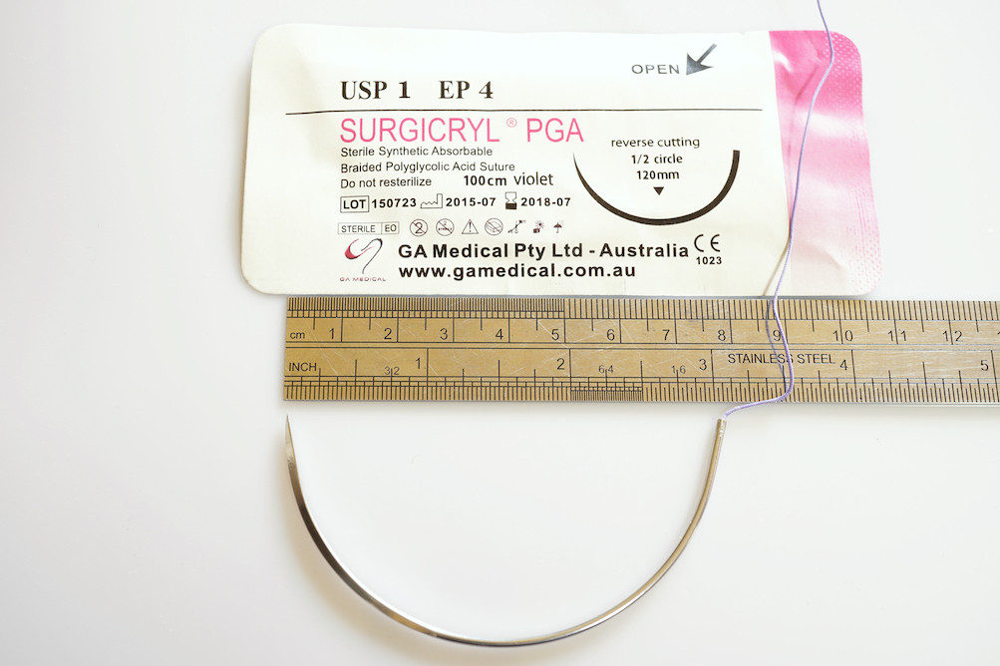
Extra Large Needle & PGA Suture Kits
Extra strong kits for Grey Nurse Shark surgery, featuring large needles and dissolvable sutures.
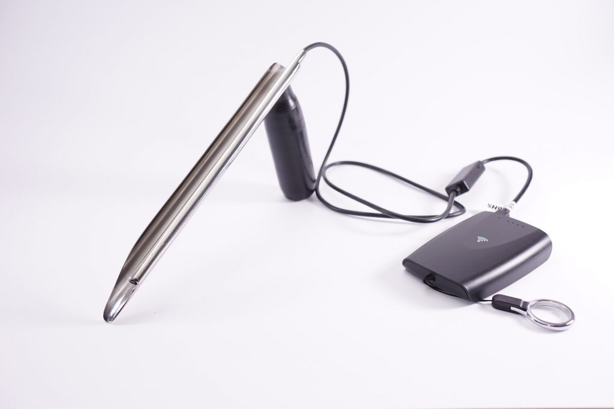
Custom Made Laryngoscope
Specifically developed and fabricated for tight-gaped Australian mammals.
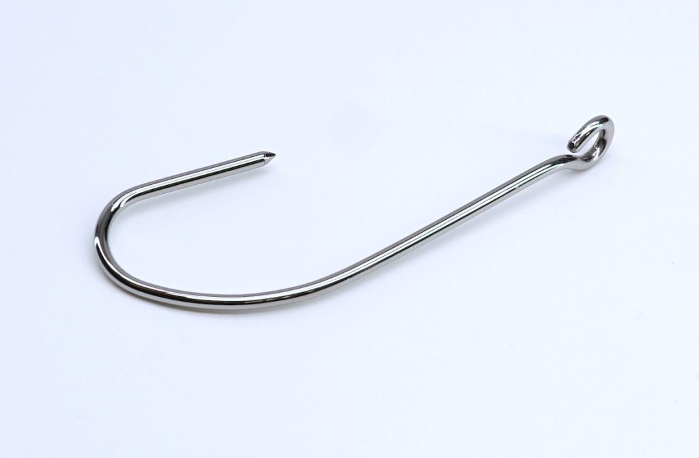
Titanium Surgical Hook Retractors
Hand-made, rust-proof retractors for marine animal surgery in high-salt environments.
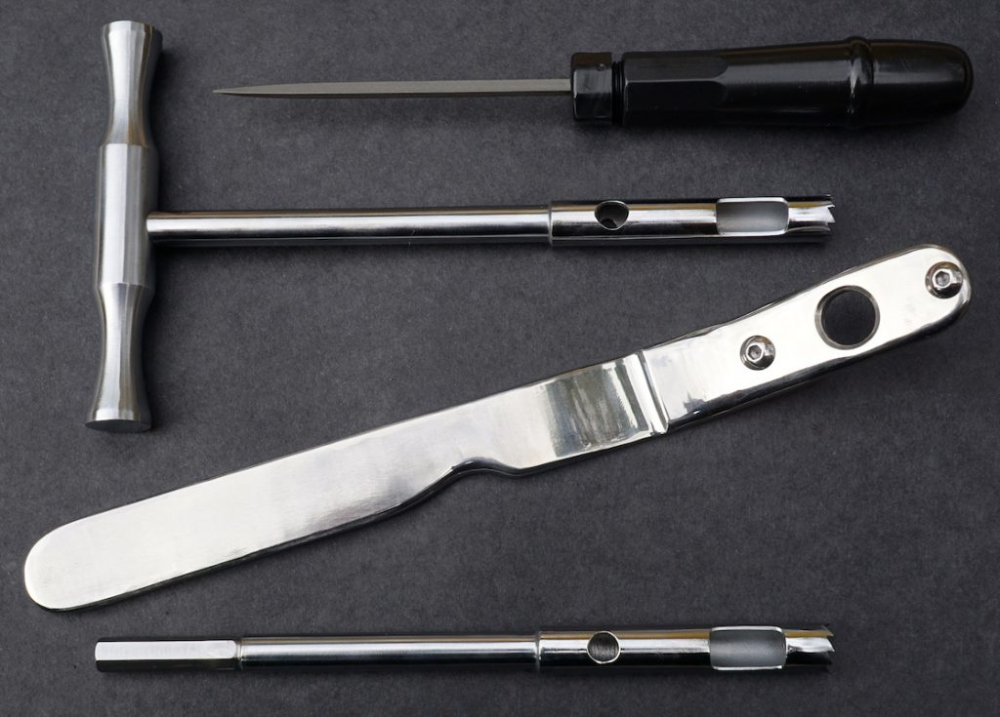
Dolphin Dorsal Fin Corer
For biopsies and GPS attachment; includes a drilling guide and sharpening file.
Catalogued Products
My catalogued veterinary instruments and apparatus are both in stock or produced on demand. I continually update my designs to improve surgical outcomes while maintaining affordability.
Request My Current PDF Catalogue
Contact for Catalogue